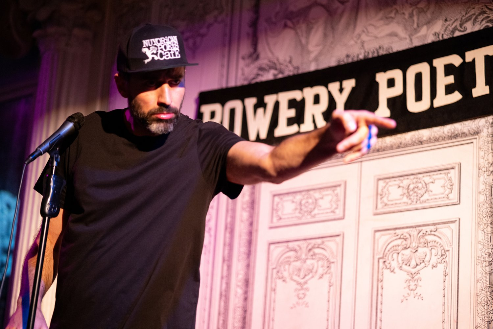

The Fire
About The Venue
Located on West Girard Avenue, The Fire has earned its stripes as one of Philly’s most iconic indie venues. From raw hip-hop cyphers to experimental jam sessions, it’s the kind of place where soundchecks blur into soundscapes. The intimate setup means every performer gets heard, felt, and remembered.
Open Mic Culture
The Fire is known for nurturing new voices in the Philly scene. Weekly open mic nights here draw a crowd that's both supportive and discerning. It’s not uncommon to see someone take the mic for the first time and return a month later with a full set.
How to Join
Slots are first come, first served — sign up begins at 7:00 PM. Bring your own mic if possible, and be ready to vibe with a diverse crowd. Reach out to their Instagram @thefirephilly for the latest updates.